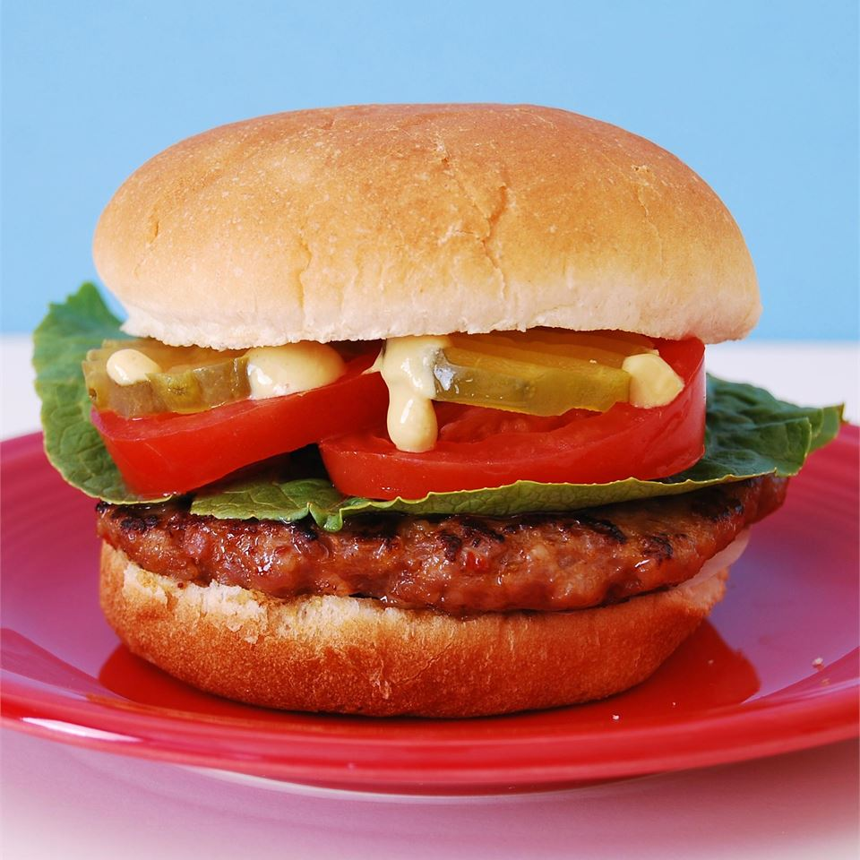

Juicy Lucy Burger

The famous Juicy Lucy! Mmmm. So good.
A favorite of Minnesotans! The famous Juicy Lucy! Mmmm. So good. You MUST use American cheese on tis to achieve the juiciness in the middle! I like sauteed mushroom and onions on mine!
Ingredients
- 1½ pounds ground beef
- 1 tablespoon Worcestersire sauce
- ³/⁴ teaspoon garlic salt
- 1 teaspoon black pepper
- 4 slices aAmerican cheese (such as Kraft®)
- 4 haumburger buns, split
Steps
- Combine ground beef, Worcestershire sauce, garlic salt, and pepper in a large bowl; mix well. Form 8, thin patties from the beef. Each patty should be slightly larger than a slice of cheese.
- Cut each slice of American cheese into 4 equal pieces; stack the pieces. Sandwich one stack of cheese between 2 ground beef patties. Tightly pinch edges together tightly seal the cheese within the meat. Repeat with the remaining cheese and patties.
- Preheat a cast-iron or other heavy bottomed skillet over medium heat. Cook burgers until well browned, about 4 minutes. It is common for burgers to puff up due to steam from the melting cheese. Turn burgers and prick the top of each to allow steam
to escape; cook until browned on the outside and no longer pink on the inside; about 4 minutes. Serve on hamburger buns.